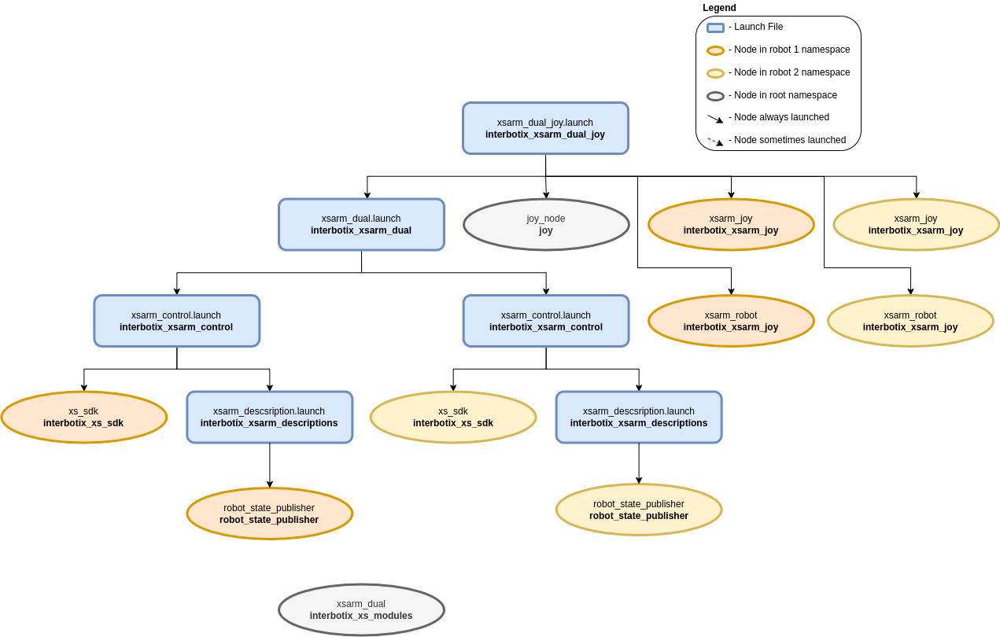

Dual Arm Joystick Control
 View Package on GitHub
View Package on GitHub
Overview
This package allows the user to control two (or any number of) X-Series arms using a single joystick controller. This package relies on two lower-level packages, interbotix_xsarm_dual to provide simultaneous control of multiple arms, and interbotix_xsarm_joy to provide joystick control.
Structure
As shown above, the interbotix_xsarm_dual_joy package builds on top of the interbotix_xsarm_control, interbotix_xsarm_joy and interbotix_xsarm_dual packages. See the other packages for descriptions of their nodes.
Usage
To get started, see the Usage section for both of the lower-level packages mentioned previously.
If you have a Bluetooth controller and it is not yet connected to you computer, see X-Series Arm Bluetooth Setup.
Once you have familiarized yourself with the capabilities of the lower-level packages, you will be ready to use this one. We will assume that you have done the following:
- Properly paired your controller with your computer.
- Configured udev rules.
- Checked the
/dev/ttyUSB*device name for each arm. - Changed the settings in the config files config/, especially
port.
Unplug/replug the U2D2s to refresh the ports and run the launch file below with the correct robot
model in place of <MODEL_*>.
$ roslaunch interbotix_xsarm_dual_joy xsarm_dual_joy.launch robot_model_1:=<MODEL_1> robot_model_2:=<MODEL_2>
You can now use your Bluetooth controller to move around the arms.
To further customize the launch file at run-time (like with a different robot model), look at the table below:
| Argument | Description | Default Value |
|---|---|---|
| robot_model_1 | model type of the first Interbotix Arm such as ‘wx200’ or ‘rx150’ | “” |
| robot_name_1 | arbitrary name that is unique to the first robot arm | “arm_1” |
| base_link_1 | name of the ‘root’ link on the arm; typically ‘base_link’, but can be changed if attaching the arm to a mobile base that already has a ‘base_link’ frame | ‘base_link’ |
| modes_1 | the file path to the ‘mode config’ YAML file for the first robot | refer to xsarm_dual_joy.launch |
| robot_model_2 | model type of the second Interbotix Arm such as ‘wx200’ or ‘rx150’ | “” |
| robot_name_2 | arbitrary name that is unique to the second robot arm | “arm_2” |
| base_link_2 | name of the ‘root’ link on the arm; typically ‘base_link’, but can be changed if attaching the arm to a mobile base that already has a ‘base_link’ frame | ‘base_link’ |
| modes_2 | the file path to the ‘mode config’ YAML file for the second robot | refer to xsarm_dual_joy.launch |
| use_sim | if true, the Dynamixel simulator node is run; use RViz to visualize the robot’s motion; if false, the real Dynamixel driver node is run | false |
| use_rviz | launches RViz to show both arms | false |
| rvizconfig | file path to the config file RViz should load | refer to xsarm_dual_joy.launch |
| threshold | value from 0 to 1 defining joystick sensitivity; a larger number means the joystick should be less sensitive | 0.75 |
| controller | type of controller (‘ps3’, ‘ps4’, or ‘xbox360’) | ps4 |
| topic_joy_raw | topic containing raw joystick commands that the xs_arm_joy nodes should subscribe to | “/commands/joy_raw” |